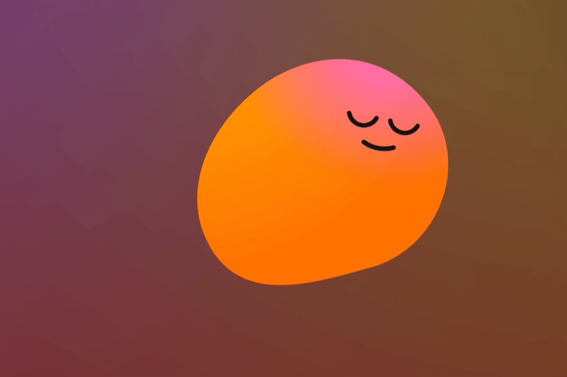

[Needfinding]
In a world of Reels and endless notifications, digital platforms rival in retaining our precious attention. Whether we’re entrapped in a doom-scroll or just have a busy schedule, many college students don’t have a chance to relax (nor know how to). And here comes Headspace to the rescue.
Headspace is a mindful platform that helps you “feel like your best self with meditations, stress-relieving exercises, sleep resources, and beyond”. The company promotes itself as a powerful course to reduce stress and anxiety, but how effective is it? As a busy college student, I’m curious to explore the effectiveness of Headspace in reducing stress. In this design sprint, I will be interviewing end users of Headspace to learn more about their user experience as stressful college students.
read more